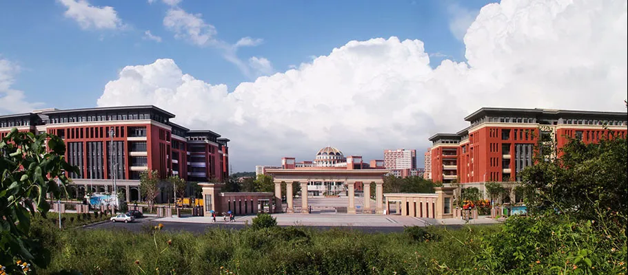

广州医科大学宁玉萍团队诚聘博士后与科研助理（神经生物学方向）
原文：https://mp.weixin.qq.com/s?__biz=MzAwMzIzOTk5OQ==&mid=2247526918&idx=2&sn=55a91d2d4facab4b4851044805e812c1&chksm=9b3c1356ac4b9a408926a731772e42b8a326a986bc83e348d1fbda08024a06db5f72a637efbb#rd 合集：求职/求学/招聘
写在前面
我们长期发布招聘/求职板块(甚至我给自己都发了求职：Biomamba求职| 国奖+4篇一作SCI)，欢迎各位老师/老板欢迎联系~我们也在招贤纳士：Biomamba生信基地诚招运营。其它需要求职的小伙伴也欢迎把简历发给我们[Biomamba_yunying]，大家一起找工作/学习。
**ABOUT US **

广州医科大学 是国家**“双一流”** 建设高校，拥有1个国家医学中心、1个国家临床医学研究中心、1个国家重点实验室、12个省部级重点实验室、5个省部级工程技术研究中心/工程实验室、1个省部共建协同创新中心、1个国家大学科技园培育基地等。拥有1个国家重点学科、7个省部级重点学科、33个市（厅）级重点学科；临床医学入选国家“双一流”建设学科；10个学科（临床医学、精神病与精神卫生学、神经科学与行为学、生物学与生物化学、分子生物学与遗传学等）进入ESI排名全球前1%，临床医学进入ESI全球前1%。学校拥有24个国家级临床（中医）重点专科，其中呼吸科排名全国第一、变态反应排名全国第三、小儿外科排名全国第四、胸外科排名全国第五、小儿内科排名全国第六、精神医学（精神病与精神卫生学）排名全国第六。
团队简介
宁玉萍 ，教授，博士生导师，博士后合作导师。广州医科大学附属脑科医院党委书记、广州医科大学精神卫生学院院长，国家临床重点专科带头人，神经致病基因与离子通道病教育部重点实验室主任，广东省神经科学疾病研究重点实验室主任，广东省精神疾病转化医学工程技术研究中心主任，广东省医学领军人才，中国精神卫生领域杰出科技工广东省医学领军人才，中国精神卫生领域杰出科技工作者，兼任中国老年医学学会认知障碍分会副会长、广东省医师协会精神科医师分会主任委员、广东省医院协会副会长。作为第一完成人获获广东省科学技术奖科技进步奖二等奖、中国仪器仪表学会科学技术进步奖二等奖等。主持国家重点研发计划和国自然项目 20 余项。主要从事情绪与认知障碍疾病的发病机制、早期诊断、个体化诊疗等研究方向，以及早期诊断和精准治疗新技术的研发。以第一或通讯作者在 Brain Behav Immun、Nucleic Acids Research等国际权威期刊发表 SCI 论文 200 余篇。牵头制定老年痴呆及老年期抑郁症诊疗专家共识 2项；主编参编教材、专著及指南 10 余部。
张宇虹 ，广州医科大学“南山学者”引进人才，特聘教授，研究生导师，博士后合作导师，主要从事研究神经干细胞和星形胶质细胞及其微环境在神经和精神类疾病（抑郁/焦虑、阿尔茨海默病等）中的作用，涉及单细胞时空多组学、电生理记录、病毒示踪、神经递质检测及动物行为范式检测等技术。近 5 年以第一作者或共同作者在 Cell Stem Cell、Stem Cell Reports、Neurosci Bull等国际权威学术期刊发表多篇研究论文**。** 先后获得中国科学院院长优秀奖、中国细胞生物学学会青年优秀论文奖等，主持和参与国家自然科学基金等项目多项。
罗争意 ，副研究员，研究生导师，主要从事神经生物学及神经系统疾病研究，集中在抑郁症及焦虑症等情绪障碍的发病机理的探索，涉及神经电生理、离子通道、神经微环路以及肠-脑轴相关的研究等技术。近 5 年在Biol Psychiatry、Microbiome、Neuron等国际主流学术期刊发表多篇研究论文，主持和参与多项国家自然科学基金和广东省自然科学基金项目等。
1
科研条件
本研究团队有完善的科研训练体系、良好的临床和基研究科研条件、丰富的生物样本资源、扎实的国内外知名团队合作基以及充足的在研科研经费。已建立多组学数据分析、电生理检测、病毒示踪、光遗传、钙信号光纤记录、神经影像分析、嗅觉训练与动物行为学实验、神经递质探针等技术体系。此外，配备双光子显微镜、共聚焦显微镜和一系列分子生物学实验设备，为各项实验提供良好条件。课题组目前成员包括博士后、科研助理、临床医生、博士生与硕士生等，具备开展临床研究与基实验的多元化人才梯度。所在学科为国家“双一流”建设学科、国家临床重点专科，全国排名第六；拥有硕、博士学位授权点和博士后流动站。因学科建设及科研工作需要，长期诚聘博士后和科研助理 ，每年均有一定名额，欢迎有志青年加入！
2
研究方向
1、神经精神类疾病和神经退行性疾病 （抑郁症、焦虑症、阿尔茨海默病等）的发病机制和干预策略研究。
2、神经干细胞和星形胶质细胞 调控神经系统疾病的细胞和分子机制研究。
**JOIN US **
招聘岗位
博士后 3-4 名，科研助理 2-3 名。
工作地点：广州市荔湾区明心路 36 号
博士后（3-4 名）
岗位要求：
（1）35 岁以下，即将取得或已取得博士学位（获学位时间一般不超过3年），研究背景以下两者具备其一：
1) 湿实验方向 需要具有神经生物学、精神病学、分子生物学、细胞生物学、遗传学等相关生物学或基础医学专业背景。有动物行为实验、脑片/在体电生理、神经环路、谱系示踪验优先考虑；
2)干实验方向 需要具有生物信息学、计算生物学、生物统计学等相关专业背景，拥有编程能力，熟悉 Unix/Linux 操作环境。有转录组/蛋白组/代谢组/表观组等多组学数据分析经验者优先考虑；
（2）热爱科研，为人真诚宽厚，责任心强，团队协作意识强；
（3）具备高度的自驱力，独立工作能力和科学研究能力，具备良好的英文阅读和写作能力，能独立开展课题研究；
（4）具有较好的学术研究成果，以第一作者（含并列）发表过相关领域SCI 论文至少 1 篇，能全脱产进站从事博士后工作。
岗位职责：
（1）相对独立开展科研工作，完成相应科研任务，并撰写和发表高水平学术论文；
（2）积极撰写申报各类符合条件的科研项目，如中国博士后基金、国家 “博新计划”、国家自然科学基金青年项目、广东省及广州市科研基金项目等；
（3）协助指导和培训本科生与研究生，参与实验室管理。
岗位待遇：
（1）薪资：基础年薪30 万 ，团队视业绩予以补充奖励。
（2）聘期：聘期 3 年，达到出站要求者可提前出站（但最少在站 21 个月）。
（3）经费：配套 20 万元广州市博士后科研启动费；此外，课题组根据开展项目提供所需经费。
（4）绩效：按照单位政策发放绩效奖励，最高达 35 万。
（5）出站留穗安家费 30 万（需与市属单位签订 3 年以上工作合同），如获批海外博士后人才支持项目留粤工作可获留粤资助 40 万元（需签订 3 年或以上工作合同）。具体参照申请时的实施政策。
（6）支持申报博士后创新人才支持计划、博士后国际交流计划、海外博士后人才支持项目等博士后专项，可申报国家自然科学基金、中国博士后科学基金等基金项目。如入选博士后专项，按就高标准提高待遇。对于获选者，将按照相应文件规定配套资助科研经费等。
（7）享受医院职工工会福利。根据个人需要，可协助办理个人落户。出站后择优在编留校或加入“南山学者”人才计划。
**JOIN US **
科研助理（2-3 名）
岗位要求：
（1）硕士及以上学历，神经生物学、分子生物学、细胞生物学、生物信息学等相关生物学或基础医学专业背景。有动物行为学实验或组学数据分析经历优先。
（2）具有高度自我驱动力，热爱科研，工作认真严谨，吃苦耐劳，为人真诚宽厚，善于沟通，具有服务意识和团队意识，责任心强。
（3）具有较好的学术研究经历，以主要作者身份发表（含投稿中）相关领域SCI 论文至少 1 篇。以第一作者（含并列）发表SCI 论文者优先。
岗位职责：
（1）参与科研实验与论文写作等工作
（2）负责团队仪器维护，试剂耗材的采购和服务器管理等
（3）实验室常规业务管理，协助完成实验室科研任务
岗位待遇：
（1）薪资6000-8000元/月，五险一金和各项福利参照单位相关规定执行。
（2）鼓励科研助理以主要负责人身份完成课题，可以第一作者发表文章，并享受同等科研奖励。
（3）根据个人意愿和工作能力，课题组协助提供深造条件和机会，拓宽个人职业发展渠道。
联系方式
请应聘者将个人简历发送至邮箱：zhangyuhong@gzbrain.cn ，邮件标题注明：应聘岗位+本人姓名 ，应聘者的申请材料会严格保密，初审通过者将近期安排面试。本招聘长期有效，招满即止。

如何联系我们

 公众号后台消息回复不便，这里给大家留一下领取资料及免费服务器(足够支持你完成硕博生涯的生信环境)的微信号 ，方便各位随时交流（别问在么，添加时直接说来意）。呼声很高的交流群 也建好了，欢迎大家入群讨论：
公众号后台消息回复不便，这里给大家留一下领取资料及免费服务器(足够支持你完成硕博生涯的生信环境)的微信号 ，方便各位随时交流（别问在么，添加时直接说来意）。呼声很高的交流群 也建好了，欢迎大家入群讨论：
大家可以阅读完这几篇之后添加给生信入门初学者的小贴士 如何搜索公众号过往发布内容
已有生信基地联系方式的同学无需重复添加

 您点的每个赞和在看，我都认真当成了喜欢
您点的每个赞和在看，我都认真当成了喜欢